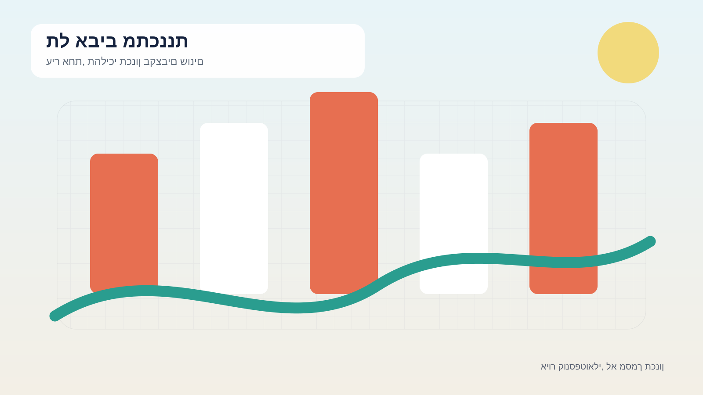
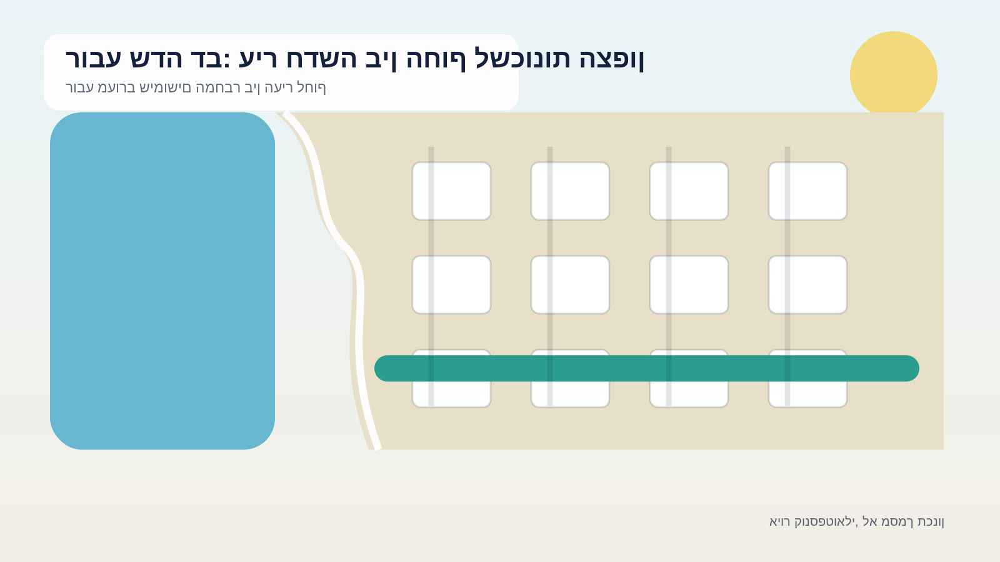
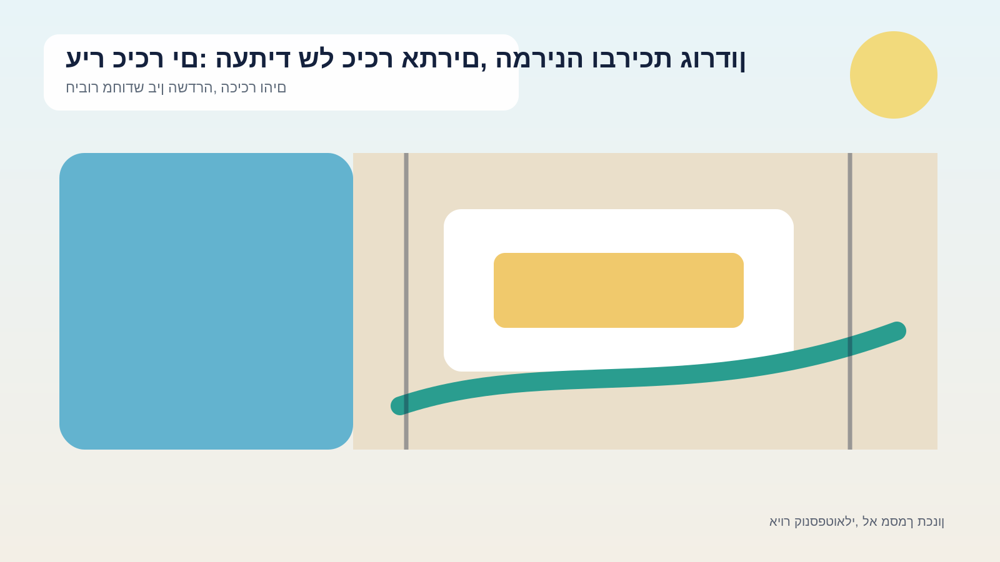
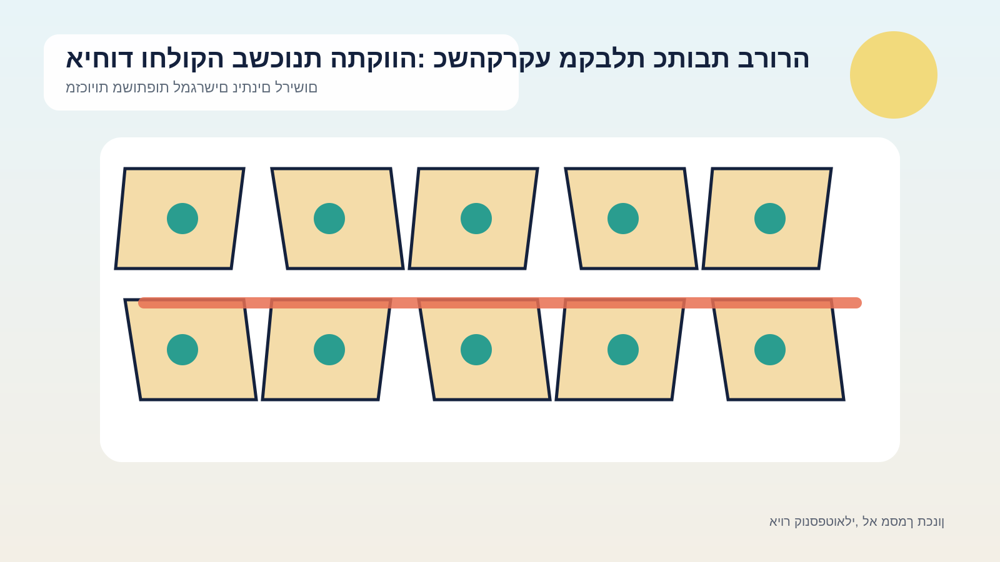
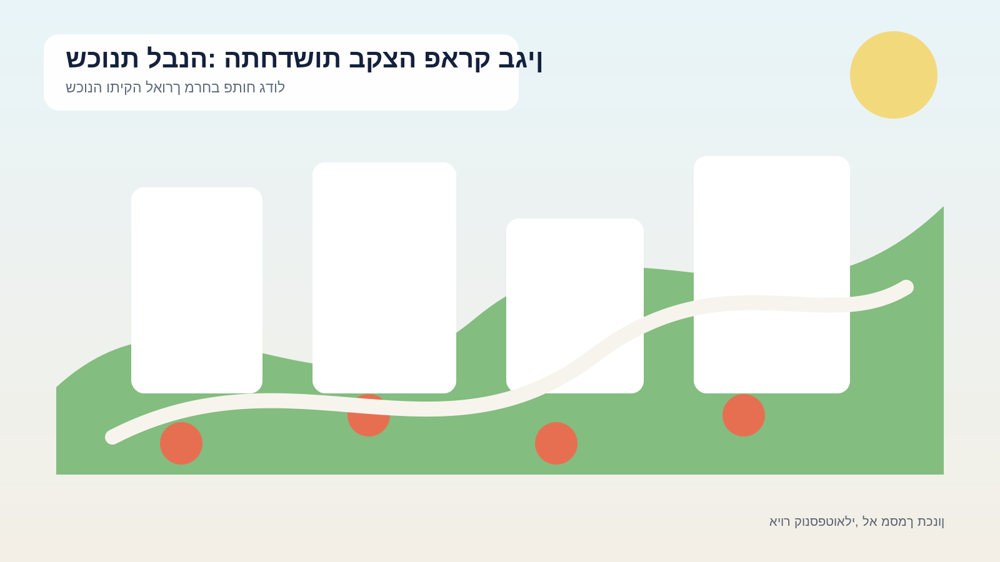
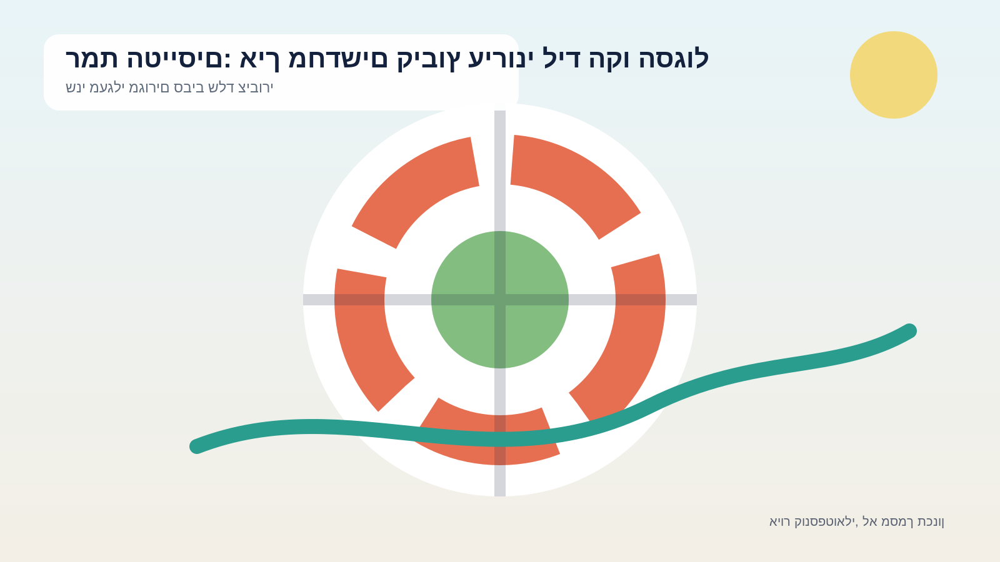
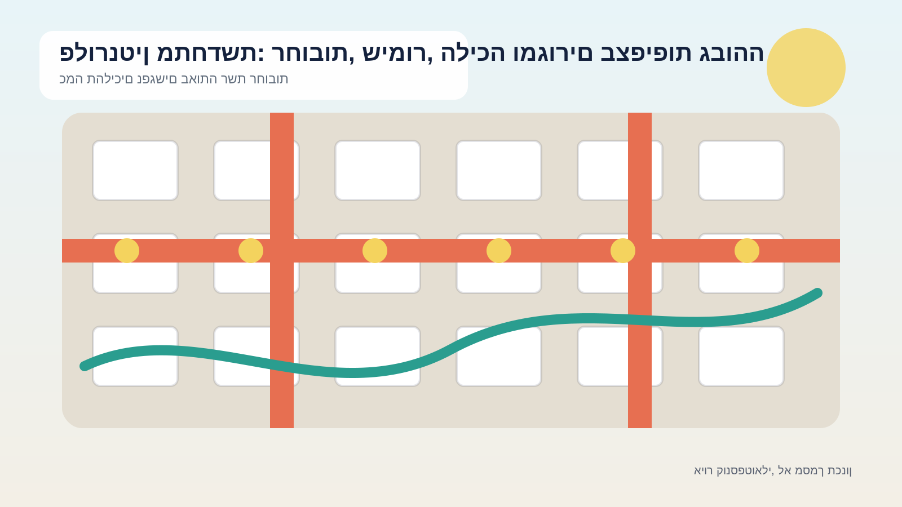
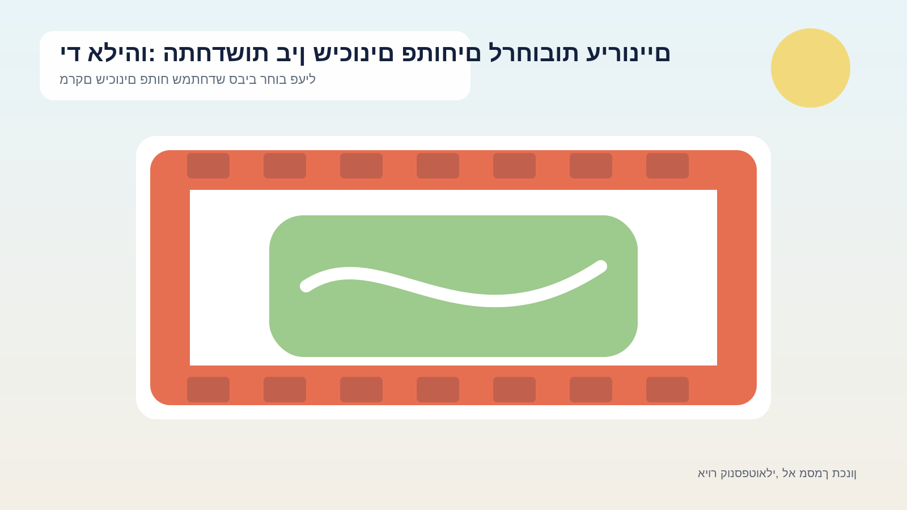
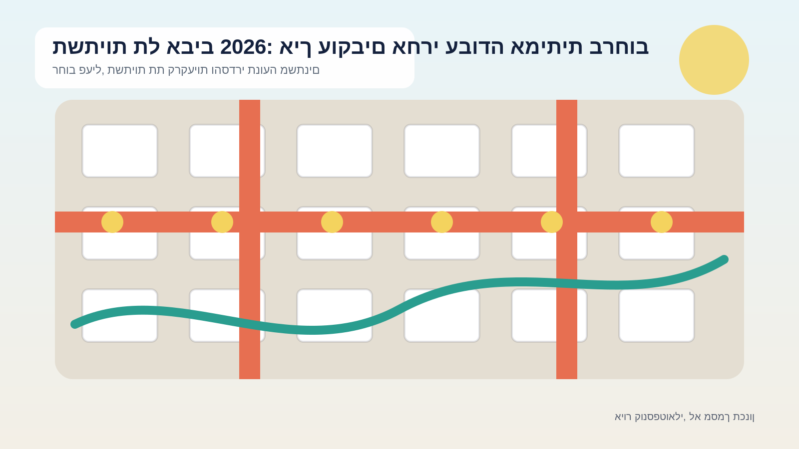
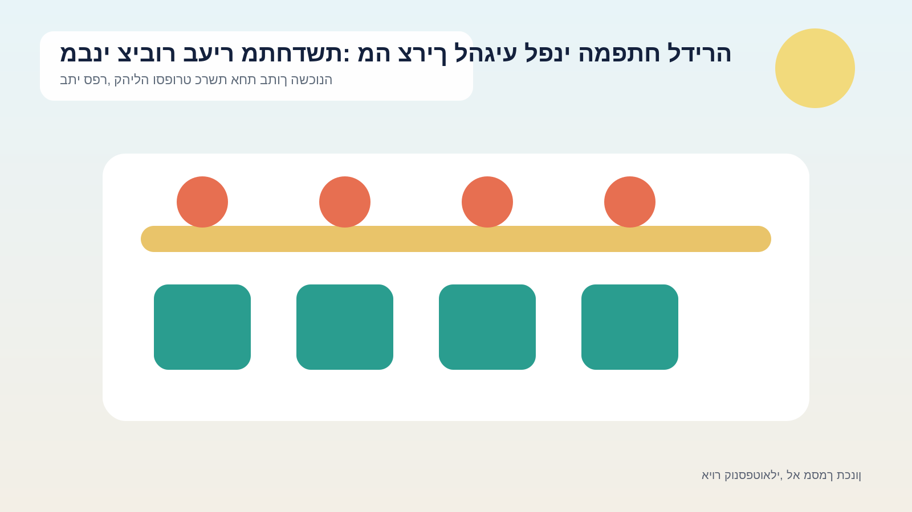

תכנית אב מאושרת
קירוי איילון: פארק עירוני מעל התשתית שמחלקת את העיר
מה באמת אושר, מדוע מדובר במהלך הנדסי מורכב, ואילו חלקים עדיין שייכים לעולם החזון ולא ללוח ביצוע מחייב.
לקריאת המדריךשישה עשר מתחמים מרכזיים, שלושה מדריכי הקשר ומערכת מקורות מסודרת. הטקסטים והאיורים נוצרו מחדש לצורכי לימוד, תוך הפרדה בין חזון, מדיניות, תכנית מאושרת, תכנון מפורט ועבודות בשטח.

סננו לפי סוג התהליך. הסטטוס בכרטיס הוא תמצית בלבד.
מה באמת אושר, מדוע מדובר במהלך הנדסי מורכב, ואילו חלקים עדיין שייכים לעולם החזון ולא ללוח ביצוע מחייב.
לקריאת המדריך
מפת דרכים להבנת תכנית המתאר, התכניות המפורטות, היקף הדיור, הפארק החופי והפער בין רובע מתוכנן לרובע שכבר מתאכלס.
לקריאת המדריך
חמישה מפגשים בתכנית המתאר, ארבעה נושאי דיון בתכנון המפורט, והדרך להבדיל בין שיתוף אמיתי לבין עדכון חד־כיווני.
לקריאת המדריך
מה כוללת תכנית 3700, מדוע היא מפוצלת לחמישה מתחמים, ואיך קוראים נכון נתונים על חוף, אנרגיה, תשתיות ובינוי.
לקריאת המדריך
מסמך המדיניות, שיתוף הציבור והמתח שבין פתיחת החוף, חידוש הכיכר, תנועה, מלונאות ובינוי חדש.
לקריאת המדריך
כ־130 דונם, כ־600 דירות קיימות, מסמך מדיניות שאושר ב־2023 ותכנית מפורטת עירונית תא/מק/5081.
לקריאת המדריך
כ־1,000 דונם, כ־13 אלף תושבים, השקעה עירונית של 50 מיליון ש״ח ותהליך שאמור להימשך שנים.
לקריאת המדריך
שלוש שכונות, מסמך מדיניות אחד ומודל שמבדיל בין בניינים במקום להחיל פינוי־בינוי אחיד על כל המרחב.
לקריאת המדריך
כ־5,133 תושבים, קרבה לפארק בגין ומסמך מדיניות שמבקש לחבר בין מגורים, קהילה, תנועה ושירותים.
לקריאת המדריך
מדיניות שאושרה ב־2021, עדכון מרחבי מימוש ב־2024, בנייני שיכון בני שלוש קומות ושתי תחנות קו סגול בקצוות השכונה.
לקריאת המדריך
מפת התהליכים שמשפיעים על התנועה, הרחובות, השימור, העסקים הקטנים והבנייה בשכונה הצפופה.
לקריאת המדריך
גבולות השכונה, המרכז המסחרי הוותיק, שלושת מגדלי גבעת הפרחים ושיתוף הציבור שמלווה את מסמך המדיניות.
לקריאת המדריך
מהו מסמך המדיניות שמכינים לשכונה, היכן עובר תחום הבדיקה, כיצד הציבור משתתף ומה עדיין אינו מקנה זכויות בנייה.
לקריאת המדריך
אין כאן פרויקט אחד. זהו פסיפס של מדיניות מרכז רובע 9, ציר לה גווארדיה, מתחמי פינוי ובינוי וחיזוק המרחב הציבורי.
לקריאת המדריך
כך מתכננים עבודות בתוך שוק שחי כל יום: שני שלבים, מקטעים של כ־40 מטר, שוק מערבי, זכויות סוחרים ובטיחות מבנים.
לקריאת המדריך
מה ההבדל בין פינוי האוטובוסים לבין תכנון המבנה, אילו שינויים אפשר לקדם בינתיים וכיצד משתפים קהילות בתהליך של עשרים שנה.
לקריאת המדריךההבדל בין מסמך מדיניות לתכנית תקפה חשוב יותר מכל הדמיה.

תכנית מתאר, מדיניות, תב״ע, עיצוב, היתר ומכרז אינם אותו דבר. הטבלה הזו עושה סדר.
לפתיחת המדריך
לא כל פרויקט ברשימה נמצא בחפירה. כך בודקים מיקום, שלב, תאריך, מקטע והודעת שטח.
לפתיחת המדריך
כך קוראים את מאגר מוסדות הציבור, מבדילים בין תכנון לביצוע ובודקים אם השירות ייפתח בזמן.
לפתיחת המדריךמלבד האתר עצמו מצורפים קובצי נתונים, מטריצת מקורות, מלאי תמונות, מטא־דאטה, דו״ח בדיקות, מפת אתר וקובץ גילוי מלא. כך ניתן להעביר את החומר למערכת ניהול תוכן, לעורך, למעצב או לצוות פיתוח בלי לאבד את הקשר בין טענה, עמוד ומקור.